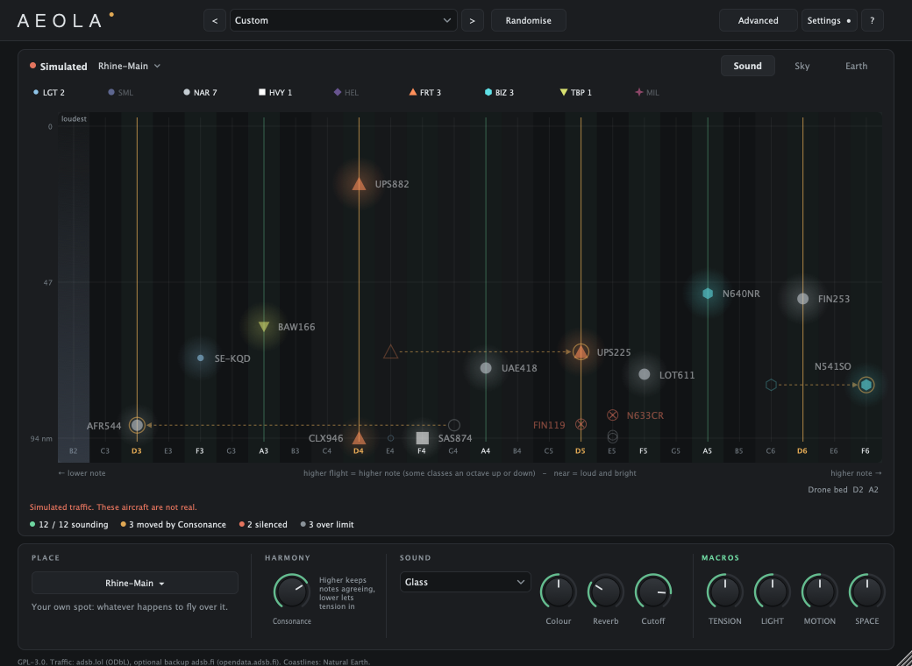
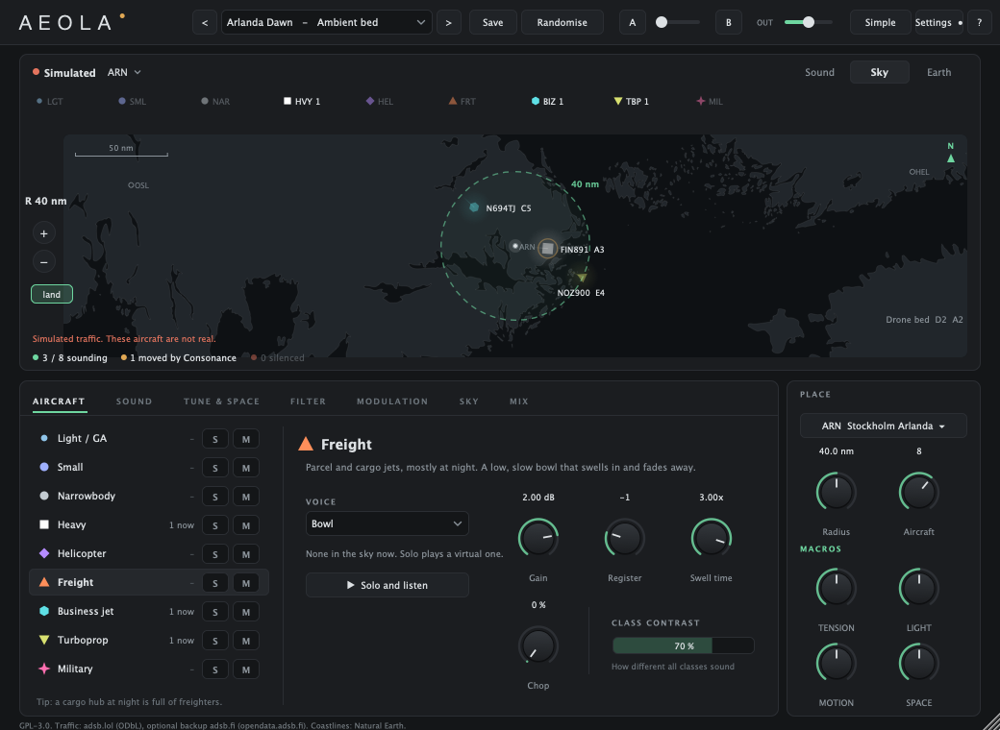
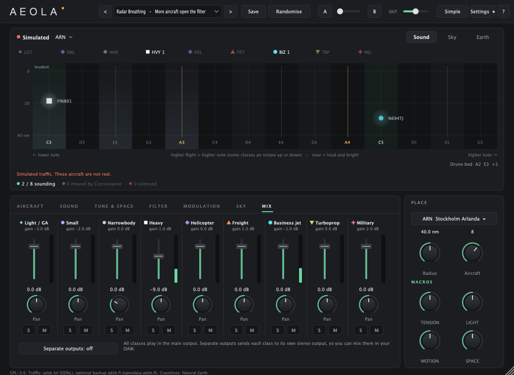

AEOLA
Aeola is an instrument that plays the aircraft flying over a place, as they fly.
Pick an airport or any spot on earth. Every aircraft within range becomes a note: the higher it flies, the higher the note; the closer it is, the louder. Notes are kept in a key and a scale, so the result stays musical. Freight, heavy jets, helicopters and business jets each have their own voice.



Download
Version 1.13.1. Installs VST3, Audio Unit and a standalone app. macOS 11 or later on Apple silicon, 10.13 or later on Intel. No Windows version yet.
The installer is not signed by Apple, so macOS will refuse to open it the first time:
- Double-click the installer. macOS says it can't be opened.
- Open System Settings, then Privacy & Security.
- Scroll down, click Open Anyway next to Aeola, and confirm.
This is a beta. If something is off, tell me.
Try it in the browser
A lighter version runs in your browser at aeola.vercel.app. No install, same idea, fewer controls. It is a good way to hear what Aeola does before downloading the plugin or when you're on the go (Aeola was actually originally built to use while flying). It also features a loop-based field recorder, which the plug-in doesn't.
What you need to know
Live traffic needs internet. Data comes from adsb.lol, which allows 500 requests a day per network. Aeola spreads those out, so a new snapshot arrives every minute or two. If the limit runs out, it keeps the last real snapshot, or plays only the drone bed, and says why. It never makes up traffic unless you choose Simulated in Sky source.
Positions are not a flight tracker. Different receivers see different aircraft, so the count can differ from other tools.
Settings has everything else: interface size, feedback, a copyable details box for bug reports, and an optional once-a-day check for new versions (a single request to this page, nothing sent about you).
Read the manual: every feature on one page, with search.
Feedback
Write to aeola@skepp.se. What did you hear, what did you expect, what host are you using. In the plugin, Settings has "Send feedback" and "Details for a bug report", which fill in the technical part.
Free
Aeola is free and open source (GPL-3.0). If you like it and want to help, you can support it on Ko-fi. Source code and issues: github.com/orgfwd/aeola-vst.